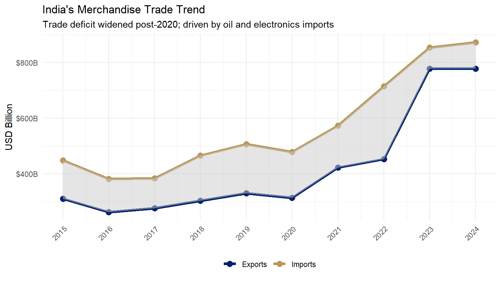

library(ggplot2)
library(dplyr)
trade_data <- data.frame(
year = 2015:2024,
exports = c(310, 262, 276, 303, 330, 314, 422, 453, 778, 778),
imports = c(448, 381, 384, 465, 507, 478, 573, 715, 854, 872)
)
trade_long <- tidyr::pivot_longer(trade_data, cols=c(exports, imports), names_to="type", values_to="value")
trade_long$type <- factor(trade_long$type, levels=c("exports","imports"),
labels=c("Exports","Imports"))
ggplot(trade_long, aes(x=year, y=value, color=type, group=type)) +
geom_line(linewidth=1.5) +
geom_point(size=3) +
geom_ribbon(data=trade_data, aes(x=year, ymin=exports, ymax=imports),
inherit.aes=FALSE, fill="grey80", alpha=0.5) +
scale_color_manual(values=c("Exports"="#012169", "Imports"="#B9975B")) +
scale_x_continuous(breaks=2015:2024) +
scale_y_continuous(labels=scales::dollar_format(suffix="B")) +
labs(title="India's Merchandise Trade Trend",
subtitle="Trade deficit widened post-2020; driven by oil and electronics imports",
x=NULL, y="USD Billion", color=NULL) +
theme_minimal(base_size=11) +
theme(legend.position="bottom", axis.text.x=element_text(angle=45, hjust=1))